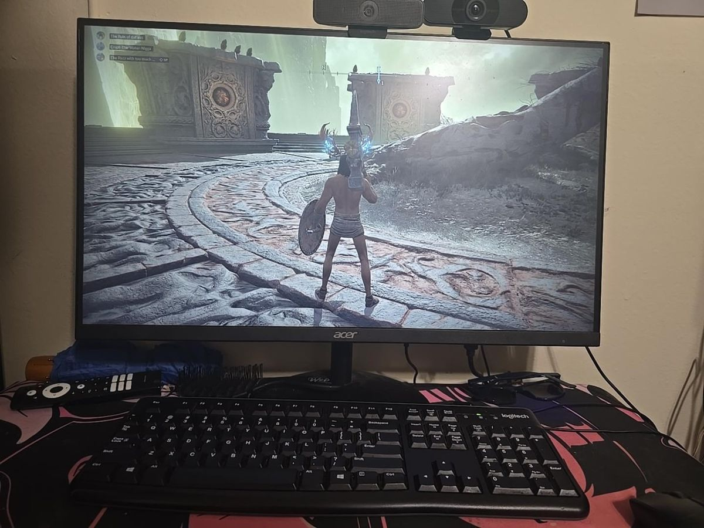

Desktop PCs
Flexible hardware and settings, with many choices for keyboards, mice, monitors, and controllers.
Gaming Through the Years
The equipment we use affects how games look, feel, and respond.

A gaming computer brings together a display, keyboard, mouse, and internal components such as a processor and graphics card. The monitor displays the game while input devices control movement and actions.
Flexible hardware and settings, with many choices for keyboards, mice, monitors, and controllers.
A straightforward way to play games on a television or monitor using a dedicated system.
Analog sticks, buttons, triggers, and vibration can make different games feel more natural.
Screen clarity, refresh rate, headphones, and speakers all contribute to immersion.